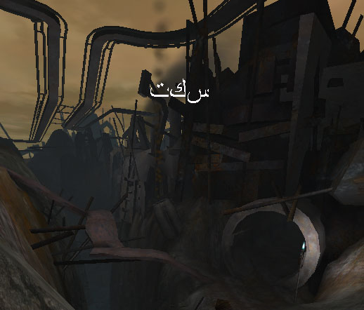

UDN
Search public documentation:
LocalizationReference
Interested in the Unreal Engine?
Visit the Unreal Technology site.
Looking for jobs and company info?
Check out the Epic games site.
Questions about support via UDN?
Contact the UDN Staff
Localization Reference
Last updated by Chris Linder (DemiurgeStudios?), to update for 2226 and include correct arabic translation. Original author was Chris Linder (DemiurgeStudios?).Introduction

The purpose of localization is to make it easy to translate your game without rewriting any code. You can use localization files (.int, .frt, .etc) to replace the properties of any variable declared as localized, at runtime. This is used mainly for strings, but can also be integers, floating point values, and any other variable type in Unrealscript. This modular design not only allows games to be translated without taking programmer or level designer time but also very easily allows games to be updated for new languages after they have been released.How Localization Works
The localized language is set in your_game.ini. The parameter is Language in the [Engine.Engine] section and it can be set to any three letter language code. Language defaults to "int" which stands for international and in most cases means English.Localized Variables
Values for localized variables are stored per package in localization files in the system directory (Engine.int, UnrealGame.int). For all UnrealScript variables with the keyword localized (or CPF_Localized in C++) the engine will look for the values of that variable in files with the extension of the localized language code. For example if your language is "frt" (French), then the engine will look for localized values in *.frt files. The engine looks in files with the same name as the package and under that category of the class name. Localized variables for HUD.uc would be in Engine.frt under the [HUD] category if "frt" was your language. If the localized file is not found or does not contain the variable in question the engine defaults to the *.int file. If the value is not found in the *.int file, the value in defaultproperties is used. See DumpInt for info on generating *.int files for each code package, which you can then use to generate different language versions.Localized Maps
Maps can be localized. In most cases the only information about maps that is localized is the LevelInfo but any script class stored in the level can be localized as well. In 2226 the only localized variables in LevelInfo are Title and the LevelEnterText but if you add more those will be localized too. These should be put in the[LevelInfo0] category in the localization file for the map. The map localization files are the name of the map with the localization language extension (for example MyMap.int or MyMap.frt) and should be stored in the system directory. See DumpInt for info on generating *.int files for each map, which you can then use to generate different language versions.
Localized Packages
You can localize packages by recreating the package with the same names but with the new data and saving the file with the extension *.localization-code_package-extension . So for example if you had a sound package VoicePack.uax, the French localized version would be VoicePack.frt_uax. See Localized Audio or Example for more details.Localization Functions
In C++ and UnrealScript, there are Localize(...) functions which take an arbitrary key name and return its corresponding localized text. In script the function is:String Localize( string SectionName, string KeyName, string PackageName )
| SectionName | The name of the [...] heading in the localization file. Generally this is the name of the class with the localized variable. |
| KeyName | The name of the localized variable. |
| PackageName | The name of the package this localized variable is in. |
const TCHAR* Localize( const TCHAR* Section, const TCHAR* Key,
const TCHAR* Package=GPackage,
const TCHAR* LangExt=NULL, UBOOL Optional=0 )
| Section | The name of the [...] heading the in the localization file. Generally this is the name of the class with the localized variable but in C++ often this nothing more than an arbitrary category. |
| Key | The name of the localized variable. |
| Package | The name of the package this localized variable is in. |
| LangExt | This is the localized language code. If NULL is passed, this will use the current language. |
| Optional | If this is false, and the string could not be found, this functions will write out an error and the result returned will be a concatenation of the LangExt, Package, Section, and Key that could not be found. |
DumpInt
DumpInt is a commandlet and also an UnrealEd console command. It is used for generating *.int files from packages. It will create an entry for every localized variable in the package in an *.int file with the name of the package you pass it. This is used mainly for code packages and maps because they are generally the only things with localized variables. Once an *.int file is created you can make copies for each language you plan on localizing to and have the copies translated. This process is much easier than manually going though each source file and looking for localized variables. It is worth noting that you should be careful using DumpInt on packages such as Core and Engine because there are fields specified in these *.int files that do not correspond to localized variables. Some code reads these fields manually using Localization Functions to localize parts of the engine that do not have localized variables. Running DumpInt on a package that already has an *.int file and uses Localization Functions (like Core and Engine) will overwrite the *.int file with an incomplete version containing only the localized variables.DumpInt Commandlet
The DumpInt Commandlet is used at the command prompt in the system directory. Usage:ucc DumpInt <file[s]>
For example, "ucc DumpInt UnrealGame.u GUI.u" will generate UnrealGame.int and GUI.int in the system directory. Below are parts from GUI.int:
[ExtendedConsole]
AddedCurrentHead="Added Server:"
AddedCurrentTail="To Favorites!"
[MyTestPage]
MyBackButton.Caption="BACK"
MyBackButton.Hint="Return to Previous Menu"
MyHeader.Caption="Settings"
[MyTestMultiColumnList]
ColumnHeadings[0]="Caption"
ColumnHeadings[1]="Value"
ColumnHeadings[2]="Key"
[GUIFont]
FontArrayNames=()
[fntHeaderFont]
FontArrayNames=("UT2003Fonts.FontEurostile14","UT2003Fonts.FontEurostile17","UT2003Fonts.FontEurostile21")
As you can see, DumpInt works on normal variables, subobject variables, static arrays, and dynamic arrays. DumpInt also works on localized variables in structs.
DumpInt can also be used on maps. For example "ucc DumpInt ..\Maps\MyMap.unr" will create an *.int file that contains localizable information such as the map's Title and the LevelEnterText. This information is presented twice, once under the [LevelInfo0] category and once under the [LevelSummary] category. The [LevelInfo0] category is the one that matters.
DumpInt UnrealEd Console Command
The DumpInt UnrealEd console command is used from either the "Command:" text box in UnrealEd or from the log window in UnrealEd, which you bring up by trying "showlog" in the "Command:" text box. Usage:DumpInt <package name>
DumpInt as a console command only takes one package at a time and you do not need to specify an extension. For example typing "DumpInt GUI" will generate the same *.int file in the system directory as typing "ucc DumpInt GUI.u" at the command prompt. See DumpInt Commandlet for more info on what DumpInt generates.
Localized Text
Text is probably the most common use of localization. Localization files (*.int, etc..) can contain any Unicode character and so any language even if does not use a western alphabet can be represented. To use non-standard Unicode characters (those not in Western European Windows - Codepage 1252) the file must be saved in Unicode format "Unicode - Codepage 1200". This can be done in Dev Studio by pulling down the arrow next to the save button in the Save-As dialog and selecting "Unicode - Codepage 1200" for Encoding: and leaving Line endings: at "Current Setting". You can put Unicode characters in your document in many ways like pasting from Character Map in Windows or pasting from a web page that generates Unicode characters such as Babel Fish (http://world.altavista.com/).Setting up Fonts for Localization
Once you have the localization files generated, the next trick is making sure your game can display them. In many cases this is easy because the languages you are translating to will use the same western alphabet, like German or French. Clearly this does not work in all cases though, Japanese being a prime example. Luckily you can localize textures packages which contain the font information so dropping in a new font to go with your new text requires no code changes.Localized Audio
Localizing audio is very helpful if you plan to have speech in your game. You will need to record different versions of the speech in your game for different languages. Clearly, you will not need to record new versions of your sound effects. It is therefore best to separate sounds into packages of sounds that require translation and those that do not. You can then create different versions of those sounds packages that need translation for each language.Sound File Organization
This document will assume three things about your sound file organization.- You have recorded different versions of all the wav files for all the languages you want in your game.
- You have given these wav files the exact same names for the different languages and stored them different directories.
- You want the sounds in Unreal to be named the same as the wav file names.
How to Create a Localized Sound Package
Let us say we want to localize the sound packages VoicePack stored in the file VoicePack.uax. First make a copy of VoicePack.aux named sometime like VoicePack.uax.save. Now, open VoicePack.uax in the Sounds browser in Unrealed. Next go to File -> Import... Open the directory where your wav files are stored, select a group (if you are using Unreal package groups, if not select them all), and then click Open. Make sure the Package is your sounds package, VoicePack in this case and the Group is set appropriately. Now you can click OK All and all the sounds will import. Now go to File - > Save... and save the package as VoicePack.uax. Exit Unrealed and go the Sounds directory in your game. Copy VoicePack.uax to something like VoicePack.frt_uax or VoicePack.arb_uax depending on the language. The three letter language prefix to "_uax" should be the same language code you are using to localize text to this language. You can use whatever 3 letter code you want; all it has to do is be the same as the localization code you are planning on using for this language. If you need to localize for another language just repeat this process. When you are done, rename VoicePack.uax.save to VoicePack.uax and you are ready to go. When the "Language" parameter in uw.ini is set to your language code you will hear the localized versions of the sounds when you run the editor or the game, even when you open VoicePack.uax explicitly. When the "Language" parameter in uw.ini is set to "int" you will hear the default sounds.Example
This example will go over displaying a paused message on the HUD in English, French, Japanese and Arabic. As well as displaying a message a voice will say "paused" in English, French, or Spanish every time you pause. This will demonstrate not only the ability to localize but also illustrate how falling back works if there is no appropriate value for the given language. (Note: If the translations are bad, please forgive me, this is meant only to be an example. Credit to Rebecca Linder for the arabic translation. For the voices, if the accent is not perfect, please forgive Jason Lentz, I forced him to help me.)Ground Work
For this example I created a very simple game type (LocalGame.uc) and a very simple HUD (LocalHUD.uc) and put them in a package called LocalExample. The HUD simply draws the text pause-message and plays a sound when the game is paused. LocalHUD has one localized variable:var localized string PauseMessage;In LocalExample.int the pause message is defined like so:
[LocalHUD] PauseMessage=pausedLocalHUD used LocalFonts.BigFont as its font. This font was created by making the following text file (LocalFonts.exec) and then typing "exec LocalFonts.exec" in the log in Unrealed. This created the LocalFonts.utx textures package. See the Font Tutorial for more information on creating fonts.
new truetypefontfactory package=LocalFonts name=BigFont fontname="Arial Unicode MS" height=30 obj savepackage package="LocalFonts" file="..\textures\LocalFonts.utx"The sound that is played is LocalSounds.Paused.
Localizing the Text
To localize the text I created LocalExample.frt, LocalExample.jap, and LocalExample.arb for French, Japanese, and Arabic respectively. The Japanese and Arabic versions I saved in Unicode - Codepage 1200 format while the French version did not need this. The files are listed below: French[LocalHUD] PauseMessage=fait une pause Japanese
[LocalHUD] PauseMessage=休止する Arabic
[LocalHUD] PauseMessage=سكت I then generated the Japanese and Arabic fonts by changing LocalFonts.exec from above re-running the exec command from Unrealed for each language. You must restart Unrealed for each new font because it saves the font info.
new truetypefontfactory package=LocalFonts name=BigFont fontname="Arial Unicode MS" height=30 Path="." WildCard="*.jap" obj savepackage package="LocalFonts" file="..\textures\LocalFonts.jap_utx" new truetypefontfactory package=LocalFonts name=BigFont fontname="Times New Roman" height=30 Path="." WildCard="*.arb" obj savepackage package="LocalFonts" file="..\textures\LocalFonts.arb_utx"
Localizing the Audio
I created French and Spanish version of the audio as discussed above in the Localized Audio section. In the end I had LocalSound.uax, LocalSounds.frt_uax, and LocalSounds.spn_uax.Localization in Action
You can download the code and texture packs and audio packs and drop it into and 2226 based build very easily. Simply unzip the file into a 2226 directory, open a command prompt in the system directory and type:uw LocalMap?Game=LocalExample.LocalGameand pause the game. At first it will be in English but you can experiment with different languages by changing the Language setting in uw.ini. Try any of these:
| frt | French |
| jap | Japanese |
| arb | Arabic |
| spn | Spanish |